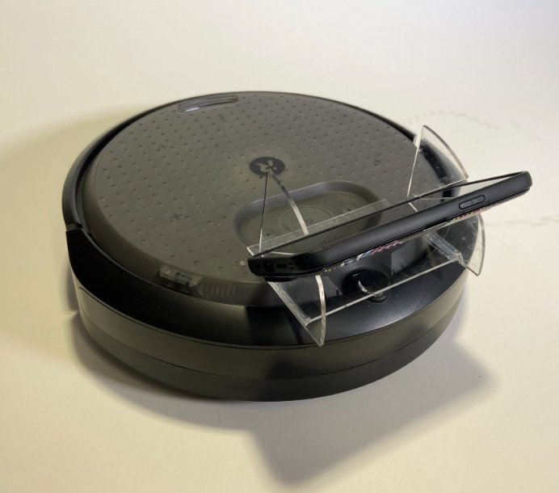
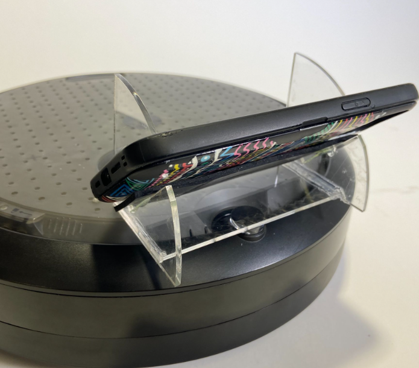
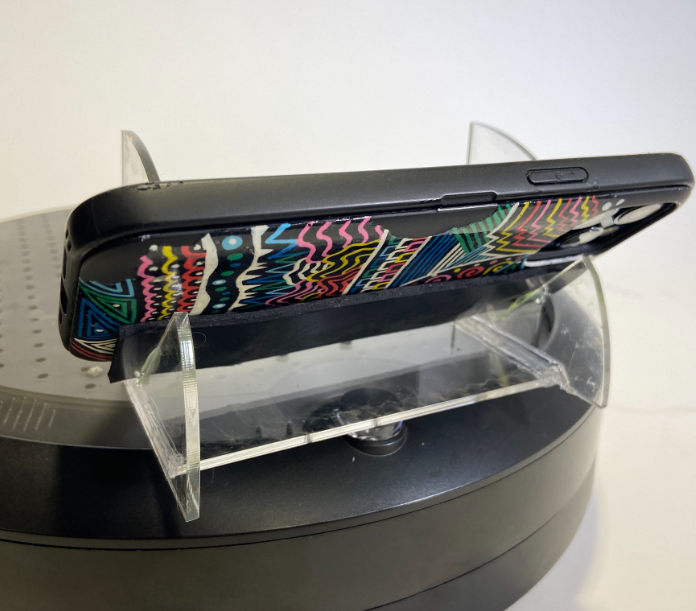

Homework5: Pit Stop



Goal:
Navigate a maze by remotely controlling an iRobot Create 3 robot with an Airtable API
Code: github.com/egold01/ME35_Create3_Maze
FlameRunner.py - code to read from and parse AirTable data
Move_FlameRunner.py - code to control movement of the Create3 robot by publishing data to the /cmd_vel topic. Uses FlameRunner.py to get values to publish from AirTable
Solution:
I worked with Cardi Mendez and Vibha Kamath to complete this challenge. The most difficult thing about this challenge was the code. I was new to APIs, ROS (which we used to control the Create3), and Create3 robots, so learning how to interface them all together was a fun challenge!
At the end of the day, the basic setup was that we had an AirTable table open in a web browser which a Python script constantly read from. Every time we read values from the table, a publisher would publish those values to the ROS /cmd_vel topic. The Create3 robot was subscribed to that topic and therefore was able to set its movement values to the most recent values published to the topic.
As simple as that sounds, getting to that point took several steps:
- First we created an AirTable table and made sure that we could read values from it. We did this in the FlameRunner.py script linked above
- Then we figured out how to parse data from the json string that we read from the AirTable
- When you publish to the /cmd_vel topic you send a Twist value which is composed of two Vector3s - one that controls the robots linear motion and one that controls the robots angular (rotational) motion. Therefore, we set up our AirTable to be a 2x3 table where each row represented either the linear or angular vector and each column the XYZ component of that vector
- We are just learning how to use ROS and all of its data types (nodes, topics, etc) so in order to publish data to the /cmd_vel topic we took code provided by the class instructor that published data to the Create3's /cmd_lightring topic and edited it to publish our data to the /cmd_vel topic
IT WORKED!!! :)
Here's a video of us moving the robot around by changing the value on the AirTable. One cool thing to note in this video is that the Create3 and my computer are on two different networks and I can still control the robot!!! That's pretty cool!!
And here's a (slightly sped up) video of our robot going through the maze! Vibha is controlling the robot remotely two floors above where the robot actually is!!